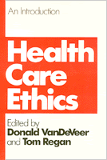

Lively essays explore the controversial field of biomedical ethics
Lively essays explore the controversial field of biomedical ethics


 Lively essays explore the controversial field of biomedical ethics
Lively essays explore the controversial field of biomedical ethics

|  |
Health Care EthicsAn Introductionedited by Donald VanDeVeer and Tom Reganpaper EAN: 978-0-87722-441-9 (ISBN: 0-87722-441-2) |
These lively essays explore the controversial field of biomedical ethics and cover such issues as abortion, euthanasia, the treatment of incompetents, ethics in nursing, and the value of life.
Donald VanDeVeer is Professor of Philosophy at North Carolina State University. He received a Ph.D. in Philosophy at the University of Chicago. His published essays are in health-care ethics, political philosophy, and environmental ethics. He is co-editor (with Christine Pierce) of People, Penguins, and Plastic Trees: Issues in Environmental Ethics and author of Paternalistic Intervention: The Moral Bounds on Benevolence.
Tom Regan was awarded the M.A. and Ph.D. degrees from the University of Virginia. Since 1967 he has taught Philosophy at North Carolina State University, where he has twice been elected Outstanding Teacher and, in 1977, was named Alumni Distinguished Professor. He is sole editor of Masters of Life and Death: New Introductory Essays in Business Ethics and Earthbound: New Introductory Essays in Environmental Ethics. His other books include Understanding Philosophy, All that Dwell Therein: Essays on Animal Rights and Environmental Ethics, The Case for Animal, and most recently, Bloomsbury's Prophet: G. E. Moore and the Development of His Moral Philosophy.
Philosophy and Ethics
Health and Health Policy
© 2015 Temple University. All Rights Reserved. This page: http://www.temple.edu/tempress/titles/398_reg.html.